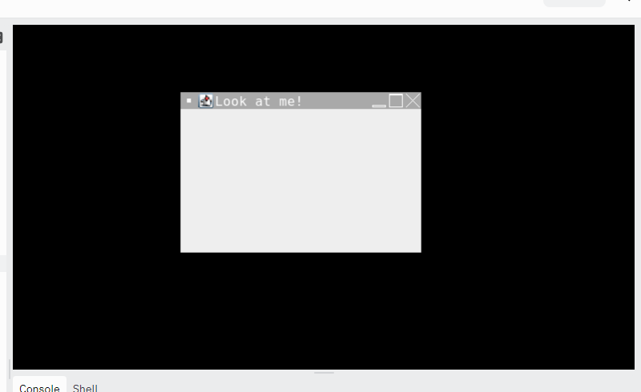
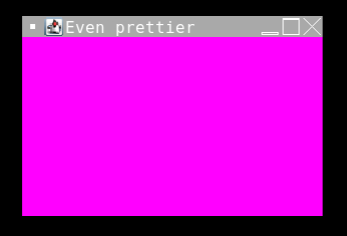

Look at my window! You can move it around, maximize it, minimize it, anything! I made it in replit, and you can, too!
It's just a container! We are going to fill that container up with stuff! How fun is that?
Look at the example above. We took that container, and gave it a title, a size, a little x in the top right hand corner, and made it visible (after we set it up just the way we wanted it). Here is a link to everything we can do to a JFrame.
It's a container that goes inside your JFrame Object. You can have mutliple panels in your JFrame object.
In the example below, after the window is created, a panel is created, given a color, and then added to the JFrame, before makinf the JFrame (window) visible.
It's a container that goes inside your JFrame Object. You can have mutliple panels in your JFrame object.
In the example below, after the window is created, a panel is created, given a color, and then added to the JFrame, before makinf the JFrame (window) visible.
An example of graphics use is on our replit.
And here is everything you can do with Graphics!
Our replit has an example of using Dialog Boxes, but here is a great website resource to show you all sorts of cool things.